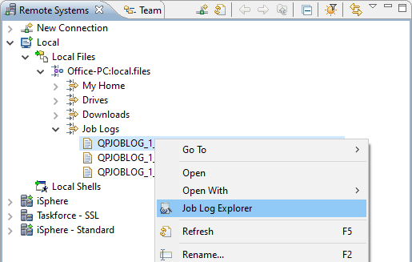
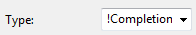

The Job Log Explorer is supposed to be used for viewing and filtering the job log
messages fast and easily. You can open it from the context menus of a remote job, a
remote spooled file or a local spooled file (Text format).
The Job Log Explorer is supposed to be used for viewing and filtering the job log
messages fast and easily. You can open it from the context menus of a remote job, a
remote spooled file or a local spooled file (Text format).
Messages can be colored depending on their severity to get your attention.
You can open the Job Log Explorer perspective from 'Window -> Open Perspective -> Other...'. The perspective looks like that:
The following actions are available:
| Open a dialog for selecting the job whose job log is to be shown. | ||
 | Opens an SQL editor for editing the SQL WHERE clause for filtering the job log entries. (Local operation that does not contact the host system.) | |
| Exports all job log entries to Excel. | ||
 | Resets all columns to their default size. | |
 | Reloads the job log entries. (Remote operation that reloads the data from the host.) |
The properties of the job log are displayed in the Eclipse Properties view:

Click the Explore job log button at the top of the Job Log Explorer view:
Select the connection and fill in the job name, user name and job number and click the [OK] button.
Select the Retrieve job name from clipboard option to let the dialog retrieve a qualified job name from the clipboard. The supported formats are:
Go to the Jobs subsystem and start the Job Log Explorer from the context menu of a remote job:
Set a service entry point and launch your program. When the program hits the breakpoint, you can launch the Job Log Explorer from the context menu of the Job node:
Go to the iSphere Spooled Files subsystem and start the Job Log Explorer from the context menu of a QPJOBLOG spooled file:

Go to the Local subsystem and start the Job Log Explorer from the context menu of a given local file:

The file name must not necessarily start with QPJOBLOG. If the job log parser cannot not recognize the format, an error message is displayed:
Use the drop down combo boxes and the text field at the top of the view to set your filters. Then press the [Apply filters] button to apply the filters to the job log. Each search argument can be negated with a preceding exclamation mark (!):

You may also select specific message, which are displayed regardless of the filter settings. Click the checkbox icon next to a job log message to select or deselect a message.
The text field can also be used for searching the messages for a given text. Today, the search does not include the second level text.

For more advanced queries you can use the SQL editor. Click the Edit SQL button at the top of the Job Log Explorer view to open the SQL editor:
The SQL Editor is used to enter a SQL WHERE condition for selecting a subset of the available job log entries entries. Enter the WHERE condition and then click the Execute button or press Ctrl+Enter to execute the query. Refer to the SQL Reference to see the list of available functions.
Use Ctrl+SPACE for content assistance.
The following actions are available:
| Ctrl+SPACE | - | Content assist. |
| Add Field | - | Content assist. |
| Clear | - | Clears the where condition. |
| Ctrl+ENTER | - | See: Filter |
| Filter | - | Executes the query with the current where condition to create a subsetted list of the available job log entries. |
| Notice: Filtering job log entries is a local task, which does not reload the job log from the host. |
| Notice: The SQL WHERE clause is applied to the records that have been downloaded to the PC. It must be specified in the iSphere SQL syntax, which in most cases matches the IBM i SQL syntax. |